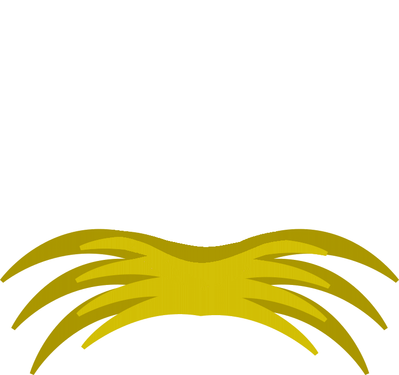
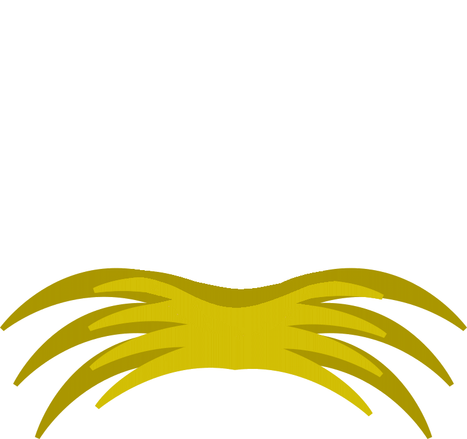

Pišek se najprej loti jajc, ki pripadajo goskam. S pomočjo programskih blokov napiši program, ki bo vodil Piška. Pišku boš lahko pomagal z ukaznimi bloki, ki jih najdeš poleg naloge. Zraven običajnih ukazov za premikanje in pobiranje jajc, imaš na voljo tudi nov sklop programskih blokov, ki se imenujejo zanke. Slednje bloke uporabljaš, če želiš, da se neko dejanje ponovi večkrat. Primer: namesto, da štirikrat uporabiš blok premakni se desno, uporabiš zanko ponavljaj 4x (število lahko poljubno spremeniš).
Goske so bile nad Piškovo pomočjo več kot navdušene, Pišek se je odločil pomagati še račkam. S pomočjo programskih blokov napiši program, ki bo vodil Piška. Tako kot na prvi stopnji imaš na voljo zanke, ki zmanjšajo število uporabljenih blokov.
Tako, preostala so le še gnezda kokoši. Teh je nekoliko več, zato bo moral biti Pišek pri pospravljanju previden, da jajc ponesreči ne pomeša med seboj. S pomočjo programskih blokov napiši program, ki bo vodil Piška. Tako kot na prvi in drugi stopnji imaš na voljo zanke, ki zmanjšajo število uporabljenih blokov. Namig: včasih ni slabo začeti na koncu!


 
